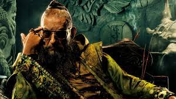
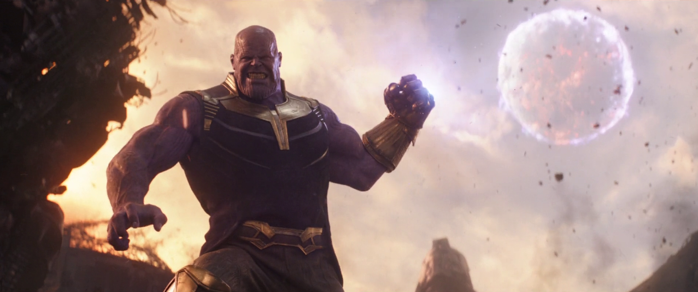
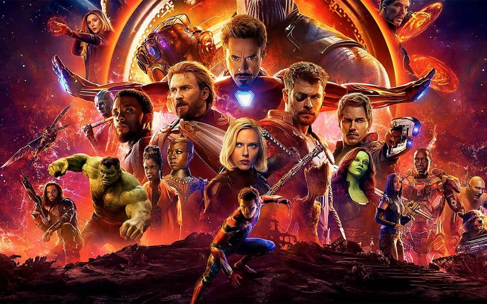
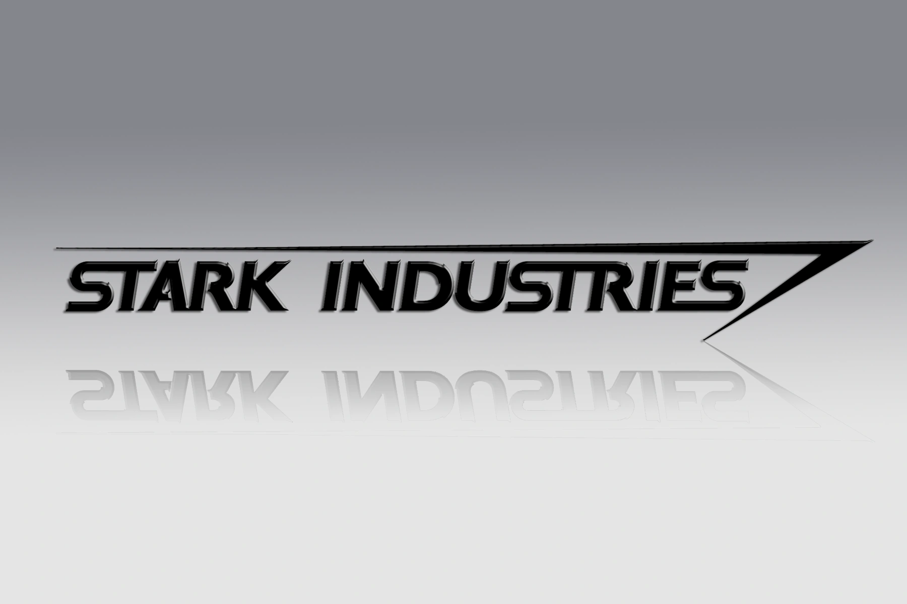
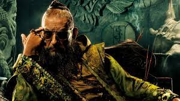
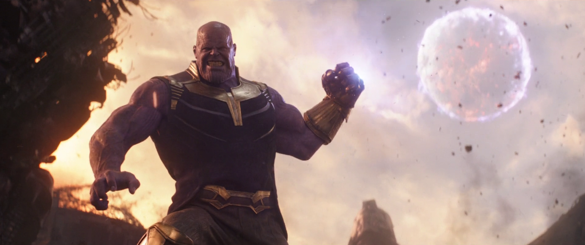
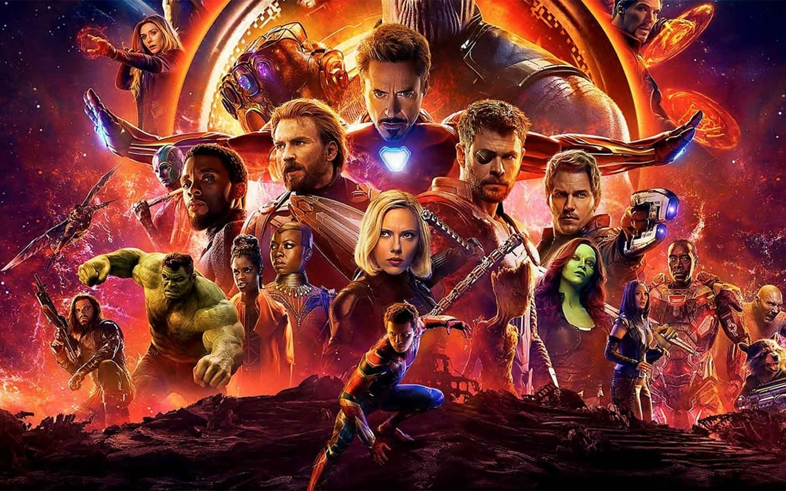
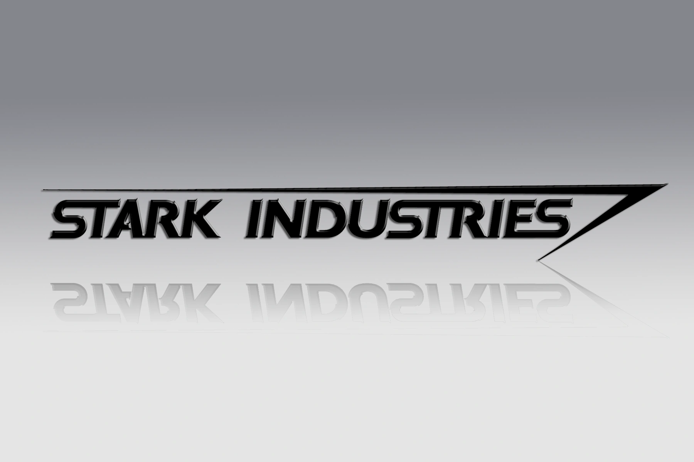

Vie de Tony Stark
Tony Stark, également connu sous le nom d'Iron Man, est né dans une famille fortunée, il hérite de Stark Industries, une entreprise d'armement.
Après avoir été capturé par des terroristes et avoir conçu une armure pour s'échapper, il décide de devenir Iron Man pour combattre le crime et protéger le monde.
Stark est connu pour sa personnalité arrogante et son intelligence exceptionnelle en tant que génie ingénieur et inventeur. Il a créé sa propre intelligence artificielle nommé JARVIS (Just A Rather Very Intelligent System) qui rendait en même temps hommage à Edwin Jarvis, son majordome.
Au fil des années, il a combattu de nombreux ennemis, dont son propre ennemi juré, le Mandarin.
Il a également été un membre important des Avengers, jouant un rôle crucial dans la défense de la Terre contre des menaces extraterrestres et de divers ennemis.
Malgré ses luttes personnelles et ses imperfections, Tony Stark est un héros qui incarne le courage, la résilience et le sacrifice. D'autant plus lorsqu'il va se sacrifier pour sauver des milliards de personnes en tuant Thanos.